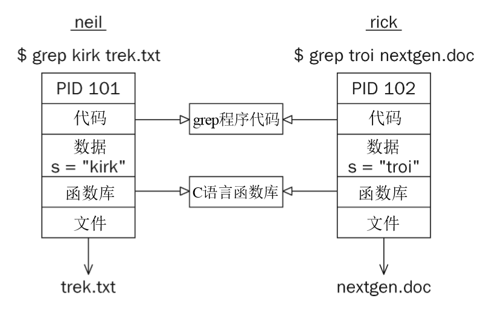

第十一章 进程和信号
什么是进程？
UNIX标准把进程定义为：“一个其中运行着一个或多个线程的地址空间和这些线程所需要的系统资源。”
可以把进程看作是正在运行的程序实例。
作为多用户系统，Linux允许许多用户同时访问系统。每个用户可以同时运行许多个程序，甚至运行同一个程序的许多实例。系统本身也运行着一些管理系统资源和控制用户访问的程序。
进程由程序代码、数据、变量（占用着系统内存）、打开的文件（文件描述符）和环境组成。一般来说，Linux系统会在进程之间共享程序代码和系统函数库，所以任何时刻内存中都只有代码的一份副本。
进程的结构
如果有两个用户neil和rich，他们同时运行grep程序在不同文件中查找字符串。他们使用的进程如图所示：

使用如下命令可以查看进程信息：
$ ps -ef
每个进程都会被分配一个唯一的数字编号，我们称之为进程标识符或PID。它通常是一个取值范围从2到32768的正整数。当进程被启动时，系统将按顺序选择下一个未被使用的数字作为它的PID。数字1一般是为特殊进程init保留的，init进程负责管理其他进程。
grep命令执行的程序代码保存在一个磁盘文件中，它以只读的方式加载到内存中，可以被多个进程安全地共享。
系统函数库也可以被共享。例如，不管有多少个正在运行的程序要调用printf函数，内存中只要有它的一份副本即可。
进程也有不会被共享的东西：
-
文件描述符可能不会被共享。
-
栈空间，用于保存函数中的局部变量和控制函数的调用与返回。
-
自己的环境空间。
-
进程必须维护自己的程序计数器，它用来记录它执行到的位置。
在许多Linux系统上的/proc目录上有一组特殊的文件，它们允许你“窥视”正在运行的进程的内部情况，就好像这些进程是目录中的文件一样。
因为Linux有一个虚拟内存系统，能够把程序代码和数据以内存页面的形式放到硬盘的一个区域中，所以Linux可以管理的进程比物理内存所能容纳的要多得多。
进程表
Linux进程表就像一个数据结构，它把当前所有进程的有关信息保存在一个表中，包括进程的PID、进程的状态、命令字符串和其他一些ps命令输出的信息。
操作系统通过进程的PID对它们进行管理，PID是进程表的索引。
查看进程
ps命令可以显示我们正在运行的进程、其他用户正在运行的进程或者目前在系统上运行的所有进程。
例如：
$ ps -ef
USER PID %CPU %MEM VSZ RSS TTY STAT START TIME COMMAND liudiwen 4815 0.0 0.0 112644 952 pts/0 R+ 11:16 0:00 grep --color=auto git
这个命令会显示许多进程的相关信息：
-
TTY一列显示了进程从哪一个终端启动
-
TIME一列是进程目前为止所占用的CPU时间
-
CMD一列显示启动进程所使用的命令
系统进程
使用这样的命令可以查看进程的状态：
$ ps ax
PID TTY STAT TIME COMMAND 1 ? Ss 0:01 /usr/lib/systemd/systemd --switched-root --system --deserialize 20 2 ? S 0:00 [kthreadd] 3 ? S 0:00 [ksoftirqd/0] 4 ? S 0:01 [kworker/0:0] 6 ? S 0:00 [kworker/u2:0]
STAT一列用来表明进程的当前状态。常见的STAT代码有：
| STAT代码 | 说明 |
|---|---|
| S | 睡眠。通常是在等待某个事件的发生，如一个信号或有输入可用 |
| R | 运行。严格来说，应是“可运行”，即在运行队列中，处于正在执行或即将运行状态 |
| D | 不可中断的睡眠。通常是在等待输入或输出完成 |
| T | 停止。通常是被shell作业控制所停止 |
| Z | 死(Defunct)进程或僵尸(zombie)进程 |
| N | 低优先级任务, nice |
| < | 高优先级任务 |
更多代码见书本p391。
这里，有一个非常重要的进程：PID 1号进程。（书上案例是init进程，在我的CentOS7上面，显示的是systemd进程）
一般而言，每个进程都是由另一个被称之为父进程的进程启动的，被父进程启动的进程叫做子进程。Linux系统启动时，它将启动一个名为init的进程，它是第一个进程，可以把它看成是操作系统的进程管理器，它是其他所有进程的祖先进程。
进程调度
ps命令的输出结果中还会包含其本身的记录：
$ ps ax | grep 'ps ax'
5437 pts/1 R+ 0:00 ps ax
这表明进程5437是处于运行状态的前台进程（R+），正在执行的命令是ps ax。这个状态指示符只表示程序已准备好运行，并不意味着它正在运行。
在一台单处理器计算机上，同一时间只能有一个进程可以运行，其他进程处于等待运行的状态。每个进程轮到的运行时间（称之为时间片）是相当短暂的，这就给人一种多个程序在同时运行的假象。
Linux内核用进程调度器决定下一个时间片应该分配给哪一个进程。它的判断依据是进程优先级。优先级高的进程运行得更频繁。
在Linux这样的多任务系统中，多个进程可能会竞争同一个资源。在这种情况下，执行短期的突发性工作并暂停运行来等待的程序，要比持续占用处理器来进行计算或不断轮询系统来查看是否有新的输入到达的程序要更好。
我们称表现良好的程序为nice程序。操作系统通过进程的nice值来决定它的优先级。一个进程的nice值默认为0并将根据这个程序的表现不断变化。长期不间断运行的程序的优先级一般会比较低。而（例如）暂停等待输入的程序会得到奖励。这可以帮助与用户进行交互的程序保持及时的响应性。
我们可以用nice命令来让一个程序以一个nice值启动，使用renice调整一个运行中的程序的nice值。nice命令是将进程的nice值增加10（默认），从而降低该进程的优先级。可以使用ps命令的-l选项查看进程的nice值（NI一栏）：
$ ./alarm &
$ ps -l
F S UID PID PPID C PRI NI ADDR SZ WCHAN TTY TIME CMD 1 S 1000 9872 9871 0 80 0 - 1041 hrtime pts/1 00:00:00 alarm
使用nice命令让程序一个nice值启动：
$ nice ./alarm & # 重启启动，再看看它的nice值 $ ps -l
F S UID PID PPID C PRI NI ADDR SZ WCHAN TTY TIME CMD 1 S 1000 9951 9950 0 90 10 - 1041 hrtime pts/1 00:00:00 alarm
使用renice命令调整运行中的程序的nice值：
$ renice 10 $PID
状态栏STAT中包含字符N表明这个进程的nice值已被修改过，已经不是默认值了：
$ ps ax
PID TTY STAT TIME COMMAND 10725 pts/1 SN 0:00 ./alarm
启动新进程
使用system函数
我们可以在一个程序的内部启动另一个程序，从而创建一个新进程。这个工作可以通过库函数system来完成。
#include <stdlib.h> int system(const char *string);
system函数的作用是：运行以字符串参数的形式传递给它的命令并等待该命令的完成。命令的执行情况就如同在shell中执行如下命令：
$ sh -c string
my note: -c允许sh执行一个二进制文件，如：sh -c "echo hi"
如果无法启动shell来运行这个命令，system函数将返回错误代码127；如果是其他错误，则返回-1。否则，system返回该命令的退出码。
案例代码：
Note
一般来说，使用system函数远非启动其他进程的理想手段，因为它必须用一个shell来启动需要的程序。因此对shell的安装情况及其环境的依赖也很大，所以使用system函数的效率不高。
替换进程映像
exec系列函数由一组相关的函数组成，它们在进程的启动方式和参数的表达方式上各有不同。
exec函数可以把当前进程替换为一个新进程。你可以使用exec函数将程序的执行从一个程序切换到另一个程序。
exec函数比system函数更有效，因为在新的程序启动后，原来的程序就不再运行了。
#include <unistd.h> extern char **environ; int execl(const char *path, const char *arg, ...); int execlp(const char *file, const char *arg, ...); int execle(const char *path, const char *arg, ..., char * const envp[]); int execv(const char *path, char *const argv[]); int execvp(const char *file, char *const argv[]); int execvpe(const char *file, char *const argv[], char *const envp[]);
带字母l版本的参数是可变的，参数以一个空指针结束。
带字母v版本的参数用一个字符串数组来表达。
新程序在启动时把这些参数传递给main函数。
带字母p的版本的函数会搜索PATH环境变量来查找新程序的可执行文件的路径。如果它不在PATH中，我们就需要使用程序文件的绝对路径。
全局变量environ可以用来把一个值传递到新的程序环境中。此外，带字母e版本的函数可以通过参数envp传递字符串数组作为新程序的环境变量。
如果想通过exec函数来启动ps程序，可以从其中选择一个，如：
#include <unistd.h> /* Example of argument list */ /* Note we need a program name for argv[0] */ char *const ps_argv[] = { "ps", "ax", NULL }; /* Example environment, not terribly useful */ char *const ps_envp = { "PATH=/bin:/user/bin", "TERM=console", 0 }; /* Possible calls for exec functions */ execl("/bin/ps", "ps", "ax", NULL); /* assumes ps is in /bin */ execlp("ps", "ps", "ax", NULL); /* assumes /bin is in PATH */ execle("/bin/ps", "ps", "ax", NULL, ps_envp); /* passes own environment */ execv("/bin/ps", ps_argv); execvp("ps", ps_argv); execve("/bin/ps", ps_argv, ps_envp);
案例代码：
新进程的PID、PPID和nice值与原先的完全一样。
一般情况下，exec函数是不会返回的，除非发生了错误。出现错误时，exec函数将返回-1，并会设置errno。
由exec启动的新进程继承了原进程的许多特性。特别地，在原进程中已打开的文件描述符在新进程中仍将保持打开。除非它们的“执行时关闭标志”被置位（参考fcntl系统调用，第三章）。任何在原进程中已打开的目录流都将在新进程中被关闭。
复制进程映像
要想让进程同时执行多个函数，我们可以使用线程或从原程序中创建一个完全分离的进程，后者就像init的做法一样，而非exec那样调用新程序替换当前执行的线程。
我们可以通过fork创建一个新进程。这个系统调用复制当前进程，在进程表中创建一个新的表项，新表项中的许多属性与当前进程是相同的。新进程几乎与原进程一模一样，执行的代码也完全相同，但新进程有自己的数据空间、环境和文件描述符。
fork和exec函数结合在一起使用就是创建新进程所需要的一切了。
#include <unistd.h> pid_t fork(void);

如图，父进程中的fork调用返回的是子进程的PID，子进程中的fork返回的是0。通过这一点来判断究竟谁是父进程，谁是子进程。
如果fork失败，它将返回-1。失败通常是因为父进程所拥有的子进程数目超过了规定的限制（CHILD_MAX），此时errno将被设置为EAGAIN。如果是因为进程表里没有足够的空间用于创建新的表单或虚拟内存不足，errno变量将被设置为ENOMEM。
案例代码：
等待一个进程
当用fork启动一个子进程时，子进程就有了它自己的生命周期并将独立运行。有时我们希望知道一个子进程何时结束。通过在父进程中调用wait函数让父进程等待子进程的结束。
#include <sys/types.h> #include <sys/wait.h> pid_t wait(int *status);
wait函数将暂停父进程直到它的子进程结束为止。这个调用返回子进程的PID。它通常是已经结束运行的子进程的PID。状态信息允许父进程了解子进程的退出状态，即子进程的main函数的返回值或exit函数的退出码。如果status不是空指针，退出状态将被写入。
我们可以使用如下宏来解释状态信息：
| 宏 | 说明 |
|---|---|
| WIFEXITED(status) | 如果子进程正常结束，它就取一个非零值 |
| WEXITSTATUS(status) | 如果WIFEXITED非零，它返回子进程的退出码 |
| WIFSIGNALED(status) | 如果子进程因为一个未捕获的信号而终止，它就取一个非零值 |
| WTERMSIG(status) | 如果WIFSIGNALED非零，它返回一个信号代码 |
| WIFSTOPPED(status) | 如果子进程意外终止，它就取一个非零值 |
| WSTOPSIG(status) | 如果WIFSTOPPED非零，它返回一个信号代码 |
案例代码：
僵尸进程
子进程结束时，它与父进程的关联还会保持，直到父进程也终止或父进程调用wait才告结束。因此，进程中代表子进程的表项不会立即释放。虽然子系统已经不再运行，但它仍存在于系统中。因为它的退出码还需要保存起来，以备父进程今后的wait调用使用。这时它将成为一个死(defunct)进程或僵尸(zombie)进程。
如果父进程在子进程结束前异常终止，子进程将自动把PID为1的进程作为自己的父进程。子进程现在是一个不再运行的僵尸进程，但因为其父进程异常终止，所以它由init进程接管。僵尸进程将一直保留在进程表中直到被init进程发现并释放。进程表越大，这一过程就越慢。应该避免产生僵尸进程。
还有另一个系统调用可用来等待子进程的结束，它是waitpid函数。可以用它来等待某个特定的进程的结束，并且可以设置非阻塞的模式。
输入和输出重定向
已打开的文件描述符将在fork和exec调用之后保留下来。
参见案例代码：
信号
信号是Unix和Linux系统相应某些条件而产生的一个事件。接收到该信号的进程会相应地采取一些行动。我们用术语生成（raise）表示一个信号的产生，使用术语捕获（catch）表示接收到一个信号。
信号的生成可能是：
-
出现了某些错误，如内存段冲突、浮点处理器错误或非法指令。它们由shell和终端处理器生成来引起中断。
-
可以明确地由一个进程发送给另一个进程，作为在进程中传递消息或修改行为的一种方式。
信号的编程接口都是相同的。信号可以被生成、捕获、响应或忽略。
信号的名称是在头文件signal.h中定义的，以SIG开头。部分信号：
| 信号名称 | 说明 |
|---|---|
| SIGALRM | 超时警告 |
| SIGHUP | 连接挂断 |
| SIGINT | 终端中断 |
| SIGKILL | 终止进程（此信号不能被捕获或忽略） |
| SIGSEGV | 无效内存段访问 |
my note: 在我的CentOS 7上面，头文件signal.h中并没有定义这些信号，但可以通过
man 7 signal查看更多信号内容。
如接收到这些信号中的一个而没有捕获它，进程将会立即终止。通常，系统将生成核心转储文件core，并将其放在当前目录下。该文件是进程在内存中的映像，它对程序的调试很有用处。
my note: 某些信号好像不能创建core文件，比如SIGINT。而且我的环境下，SIGSEGV也不能产生core文件，除非在.bashrc中添加了
ulimit -c unlimited
在键盘上敲入中断字符（CTRL + C）就会向前台进程（当前正在运行的程序发送SIGINT信号），这将引起该程序的终止，除非它事先捕获了该信号。
如果想发送一个信号给进程，而该进程并不是当前的前台进程，就需要使用kill命令。例如，如果要向运行在另一个终端上的PID为512的进程发送“挂断”信号，可以使用如下命令：
$ kill -HUP 512
killall命令可以给运行着某一命令的所有进程发送信号。如果不知道某个进程的PID，或者想给执行相同命令的许多不同进程发送信号，这条命令就很有用了。
程序可以使用signal库函数来处理信号。
#include <signal.h> typedef void (*sighandler_t)(int); sighandler_t signal(int signum, sighandler_t handler);
准备捕获或忽略的信号由参数signum给出，接收到信号后将要调用的函数由参数handler给出，handler有一个int类型的参数（即接收到的信号代码）。
signal本身也返回一个同类型的函数，即handler。可以使用下面的特殊值来代替信号处理函数：
| 信号处理函数 | 说明 |
|---|---|
| SIG_IGN | 忽略信号 |
| SIG_DFL | 恢复默认行为 |
Warning
在信号处理函数中，调用像printf这样的函数是不安全的。一个有用的技巧是，在信号处理函数中设置一个标志，然后在主程序中检查这个标志。
发送信号
进程可以通过调用kill函数向包括它本身在内的进程发送一个信号。如果程序没有权限发送该信号，kill函数将调用失败。这个函数和同名shell命令完成相同的功能。
#include <sys/types.h> #include <signal.h> int kill(pid_t pid, int sig);
函数成功时返回0。要想发送一个信号，发送进程必须拥有相应的权限，这通常意味着两个进程必须拥有相同的用户ID（即你只能发送信号给属于自己的进程，但超级用户可以发送给任何进程）。
函数失败时返回-1，并设置errno。
进程可以通过alarm函数在经过预定时间后发送一个SIGALRM信号。
#include <unistd.h> unsigned int alarm(unsigned int seconds);
把参数seconds设置为0将取消所有已设置的闹钟请求。如果在接受到SIGALRM信号之前再次调用alarm函数，则闹钟重新开始计时。
每个进程只能有一个闹钟时间。
alarm函数的返回值是以前设置的闹钟时间的余留秒数，失败返回-1。
pause函数的作用是把程序的执行挂起直到有一个信号出现为止。当程序收到一个信号时，预设好的信号处理函数开始运行，程序也将恢复正常的执行。
#include <unistd.h> int pause(void);
当它被一个信号中断时，将返回-1（如果程序没有终止的话），并把errno设置为EINTR。
Info
使用信号并挂起程序的执行是Linux程序设计中的一个重要部分。这意味这程序不需要总是在执行着。程序不必在一个循环中无休止地检查某个事件是否已发生，相反，它可以等待事件的发生。
在编写程序中处理信号部分的代码时必须十分小心，因为在使用信号的程序中会出现各种各样的“竞态条件”。
一个健壮的信号接口
X/Open和UNIX规范推荐了一个更新和更健壮的信号编程接口：sigaction。
#include <signal.h> int sigaction(int signum, const struct sigaction *act, struct sigaction *oldact);
sigaction结构定义了在接收到参数signum指定的信号后应该采取的行动。它至少包含如下成员：
void (*sa_handler)(int); /* function, SIG_DFL or SIG_IGN */ sigset_t sa_mask; /* signals to block in sa_handler */ int sa_flags; /* signal action modifiers */